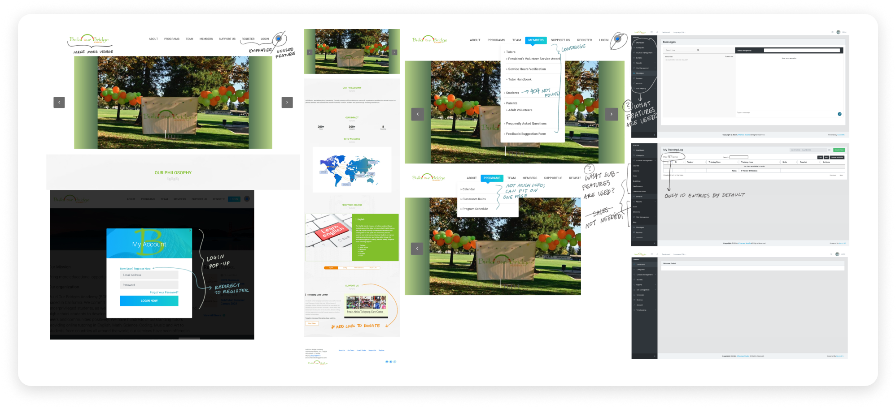

Build Our Bridge Academy


üíª Website redesign and development
üí° Overview
Build Our Bridge Academy is a non-profit organization dedicated to offering free tutoring in English, Math, Science, Coding, Music, and Art to underprivileged students from countries around the world.
I volunteered as a tutor for the organization throughout high school, and his summer, I collaborated with two former leaders to redesign and build a new website for them.
The aim of this project was to improve the overall user experience for students and tutors, focusing on time-keeping and messaging features for students and tutors while also considering scalability and ease of maintenance for the future.
We are currently in the development stage of the project, using React, Vite, and Django to implement the website.
üå± Current Website Experience
The existing website, while functional, had several issues that affected its effectiveness for organization leaders, students, and tutors. The homepage was divided into numerous sections, making navigation and quick access to information challenging. Additionally, the user dashboard included many unnecessary features—such as sales reports, pricing, and reviews—that served no practical purpose and contributed to user confusion.
Analysis of current website
üë• User Research
To gain a deeper understanding of user needs, I surveyed current students, tutors, and leaders about their experiences with the website. This survey aimed to gather their feedback on specific features and overall usability, and the insights collected were instrumental in guiding the redesign process, ensuring that the new website would incorporate enhancements that better align with users' preferences and requirements.üîß Survey Focus Areas:
❓ Overall satisfaction with the current website
❓ Usage patterns for time-keeping and messaging features
❓ Specific pain points with current functionalities
üåü Survey Results & Insights:
⏱️ Time-keeping was the most used feature, while the messaging system was rarely utilized
üìÖ There was a lack of an automatic date range selection and issues with incorrect display
⭐ There was a need for fewer unnecessary features and a simplified interface
üñãÔ∏è Design Ideation and Wireframing
Based on the insights gathered from the user research, I brainstormed website designs that addressed the identified pain points. I streamlined homepage navigation by consolidating information and sections, removing unnecessary features, and simplifying the user dashboard to enhance user experience. This new user flow allows visitors to quickly find and access the features they need with minimal clicks.
 I used Figma to design a set of low-fidelity wireframes that outline the structure of the new website. These wireframes focus on ease of use, featuring a clean layout and intuitive structure.
I used Figma to design a set of low-fidelity wireframes that outline the structure of the new website. These wireframes focus on ease of use, featuring a clean layout and intuitive structure.

Website redesign: low-fi wireframes
üí´ Final Design
Next, I refined the low-fidelity wireframes into high-fidelity versions, incorporating graphics, organized content, and a clear visual hierarchy.


Website redesign: high-fi wireframes
✅ Student and Instructor Profiles
I designed the new dashboard to streamline the user experience by focusing on the most-used features: time-keeping and messaging. The time-keeping feature was enhanced to include a more simplified date and course selection process, while the messaging system was redesigned to be more user-friendly and accessible. To simplify development and enhance usability, I created a consistent design for both tutors and learners. The learners' dashboard served as the foundation, while I added extra features to the tutors' dashboard as necessary.


Development & Launch
After finalizing the high-fidelity wireframes, we moved on to developing the website using React, Vite, and Django. We are currently in the process of building the website and plan to launch it in the next few months after thorough testing.
Prototypes and development progress
Thanks for reading!
Back to Home